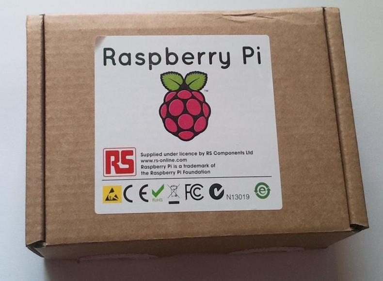
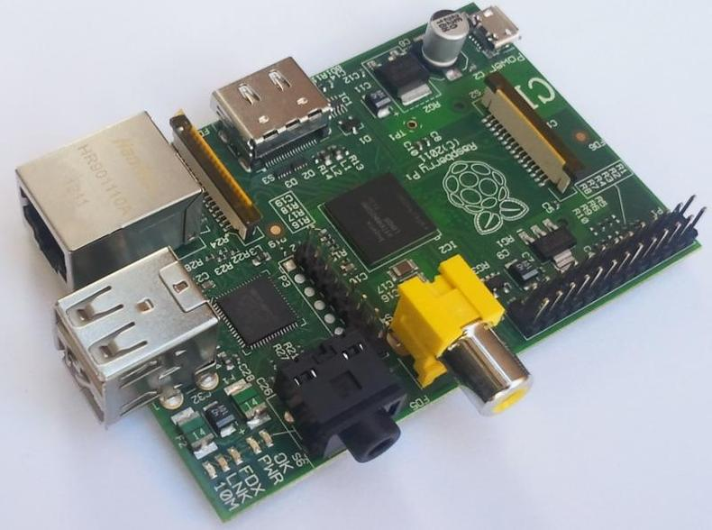
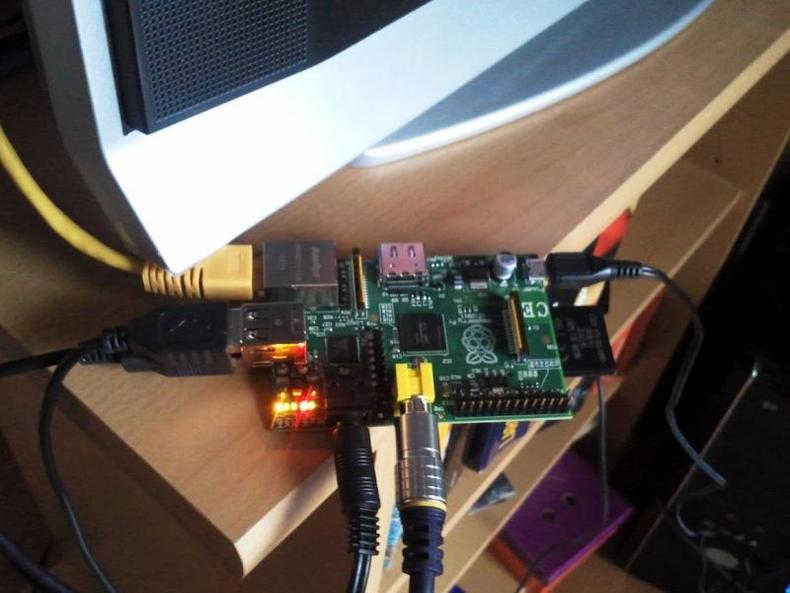
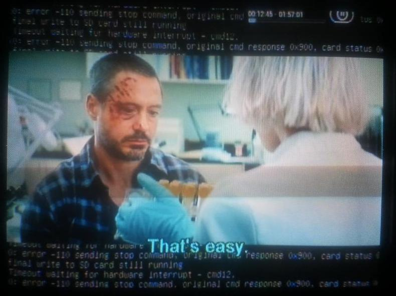
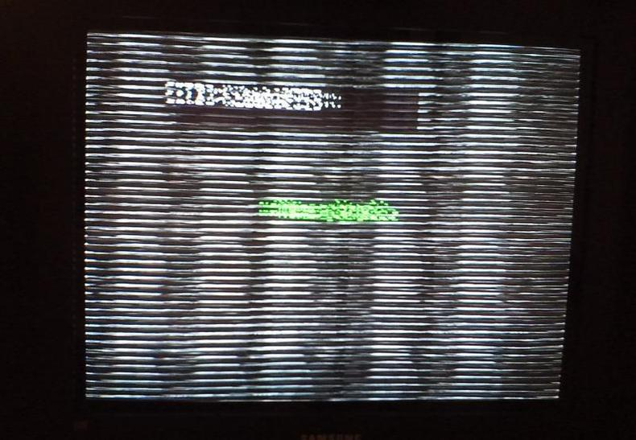

Raspberry Pi - prvi dojmovi
Raspberry Pi (u daljnjem tekstu RPi) je stigao. Malo računalo u maloj kutiji.
Planirano je da RPi dolazi u dvije varijanete, Model A i Model B. Model A je jeftinija varijanta, zvanična cijena mu je 25 USD no zasad se proizvodi samo model B i to po cijeni od 35 USD. Koliki su stvarni troškovi dok dođe na kućna vrata, saznajte u nastavku.


Raspberry Pi model B pogoni Broadcom BCM2835 procesor koji kuca na 700 MHz. Model B također ima modul od 256 Mb radne memorije koja se dijeli između centralnog procesora i grafičkog procesora. Po defaultu centralnom procesoru ostaje 186 MB. Prisutna su dva USB 2.0 priključka, HDMI izlaz, 3.5mm audio i RCA kompozitni izlaz. Raspberry Pi se na mrežu može spojiti putem RJ45 ethernet porta koji dolazi isključivo u modelu B.
Na slici ispod vidimo RPi model B, spojen analogno na TV, spojeni miš, tipkovnica i eksterni disk:

Ono što nećete dobiti uz RPi, a nužno je za njegov rad, je SD memorijska kartica.
SD kartica s predinstaliranim operativnim sustavom se može naručiti prilikom kupnje no u trenutku naručivanja ovog uređaja bile su rasprodane. Dakle, za pokretanje RPi-a potrebno je imati pri ruci jednu SD karticu kapaciteta barem 2 GB te se na nju mora nasnimiti ISO slika koja sadrži operacijski sustav. Na službenim download stranicama RPi-a dostupne su tri takve slike, od kojih se za početak preporučuje Debian Squeeze, pa sam odlučio svoje druženje s RPi-om započeti upravo s Debianom.
Instalacija slike
Prvo je potrebno skinuti ISO sliku koju planiramo staviti na SD karticu. U ovom slučaju to je debian6-19-04-2012.zip koja se nalazi na službenoj download stranici.
Zatim sliku treba otpakirati
$ unzip debian6-19-04-2012.zip
Time se dobije debian6-19-04-2012.img datoteka koja sadrži sliku.
Da bi na SD karticu stavili sliku, potrebno je imati neki čitač kartica i spojiti karticu na računalo. Zatim moramo utvrditi pod kojim imenom je kartica prepoznata: Naredbom df -h možemo vidjeti novo mountane diskove te prepoznati našu SD karticu. Ako izvršimo tu naredbu prije i poslije umetanja kartice možemo uočiti nove zapise i prepoznati karticu
$ df -h
Filesystem Size Used Avail Use% Mounted on
rootfs 19G 7.5G 10G 43% /
devtmpfs 2.0G 36K 2.0G 1% /dev
tmpfs 2.0G 2.6M 2.0G 1% /dev/shm
tmpfs 2.0G 716K 2.0G 1% /run
/dev/sda6 19G 7.5G 10G 43% /
tmpfs 2.0G 0 2.0G 0% /sys/fs/cgroup
tmpfs 2.0G 716K 2.0G 1% /var/lock
tmpfs 2.0G 716K 2.0G 1% /var/run
tmpfs 2.0G 0 2.0G 0% /media
/dev/sda7 244G 30G 203G 13% /home
/dev/sda2 196G 127G 69G 65% /windows/C
/dev/sdd1 63M 6.0M 58M 10% /media/B757-8716
/dev/sdd3 7.2G 1.6G 5.2G 24% /media/14fa9af4-552a-4f53-88ad-3259f189fccf
Vidimo da je kartica prepoznata kao /dev/sdd
Prije nastavka potrebno je unmountati sve particije koje se nalaze na kartici, u ovom slučaju to su /dev/sdd1 i /dev/sdd3
$ umount /dev/sdd1
$ umount /dev/sdd3
Slika se sada snimi na karticu s naredbom
# dd bs=1M if=debian6-19-04-2012.img of=/dev/sdd
pa onda
# sync
Ovako pripremljena kartica je dovoljna da se RPi boota. Nema on/off gumba, stvar se ušteka i radi. RPi s ovom Debian slikom se boota u terminal i prvi boot traje oko 4.5 minute, a svaki sljedeći oko jedne minute.
Defaultni username za ovu sliku je pi i pripadni password je raspberry.
Prvo što upada u oči nakon boota je činjenica da ovakav način pripremanja kartice koristi samo onaj dio kartice koji je predviđen slikom, odnosno 2 GB. Iako je moja testna kartica kapaciteta 8 GB, RPi vidi i koristi samo 2 GB, što korisniku ostavlja na koristenje cijelih 298 MB. Neke druge slike kao primjerice raspbmc pobrinu se da je cijela kartica raspoloživa. Nakon prvog boota diskovna situacija izgleda ovako:
pi@raspberrypi:~$ df -h
Filesystem Size Used Avail Use% Mounted on
tmpfs 94M 0 94M 0% /lib/init/rw
udev 10M 152K 9.9M 2% /dev
tmpfs 94M 0 94M 0% /dev/shm
rootfs 1.6G 1.2G 298M 80% /
/dev/mmcblk0p1 75M 28M 47M 37% /boot
Da bi doskočili ovom problemu potrebno je promijeniti veličinu root particije: (izvor).
Disk na kojem je particija kojoj želimo promijeniti veličinu je /dev/mmcblk0, sufiksi p1, p2 itd. su oznake particije.
Sve ovo radimo direktno na RPi-u:
# fdisk -uc /dev/mmcblk0
naredbom p izlistamo informacije o particijama.
Command (m for help): p
Disk /dev/mmcblk0: 7969 MB, 7969177600 bytes
4 heads, 32 sectors/track, 121600 cylinders, total 15564800 sectors
Units = sectors of 1 * 512 = 512 bytes
Sector size (logical/physical): 512 bytes / 512 bytes
I/O size (minimum/optimal): 512 bytes / 512 bytes
Disk identifier: 0x000ee283
Device Boot Start End Blocks Id System
/dev/mmcblk0p1 2048 155647 76800 c FAT32 (LBA)
/dev/mmcblk0p2 157696 3414015 1628160 83 Linux
/dev/mmcblk0p3 3416064 3807231 195584 82 Liswap / Solaris
Mijenjamo veličinu particiji /dev/mmcblk0p2.
Prvo izbrišemo particiju komandom d i damo mu broj particije (2 i 3 u ovom slučaju)
Command (m for help): d
Partition number (1-4): 2
Command (m for help): d
Partition number (1-4): 3
Sada napravimo particiju
(n p 2) i za početak sektora stavimo početak stare particije te za veličinu izaberemo defaultnu ponuđenu vrijednost, kako bi se particija proširila na ostatak diska:
Device Boot Start End Blocks Id System
/dev/mmcblk0p1 2048 155647 76800 c W95 FAT32 (LBA)
/dev/mmcblk0p2 157696 3414015 1628160 83 Linux
/dev/mmcblk0p3 3416064 3807231 195584 82 Linux swap / Solaris
Command (m for help): d
Partition number (1-4): 2
Command (m for help): d
Partition number (1-4): 3
Command (m for help): n
Command action
e extended
p primary partition (1-4)
p
Partition number (1-4): p
Partition number (1-4): 2
First sector (155648-15564799, default 155648): 157696
Naredbom w snimimo promjene. Također je potrebno ponovno pokrenutu RPi.
# reboot
Nakon ponovnog ulogiravanja napravimo resize
# resize2fs /dev/mmcblk0p2
Root particija je sada rastegnuta preko cijele kartice:
pi@raspberrypi:~$ df -h
Filesystem Size Used Avail Use% Mounted on
tmpfs 94M 0 94M 0% /lib/init/rw
udev 10M 148K 9.9M 2% /dev
tmpfs 94M 0 94M 0% /dev/shm
rootfs 7.3G 1.2G 5.8G 17% /
/dev/mmcblk0p1 75M 28M 47M 37% /boot
U jednom od prethodnih koraka odabrali smo opciju da se root particija proširi na cijeli disk pa sada nema mjesta za swap particiju (budući da RPi ima svega 256 MB radne memorije, malo swapa neće škoditi). To ćemo riješiti ovako
# dd if=/dev/zero of=/var/swapfile bs=1M count=128
# mkswap /var/swapfile
# swapon /var/swapfile
# reboot
Editirati datoteku: /etc/fstab iz ovog:
proc /proc proc defaults 0 0
/dev/mmcblk0p1 /boot vfat defaults 0 0
#/dev/mmcblk0p3 none swap sw 0 0
u ovo:
proc /proc proc defaults 0 0
/dev/mmcblk0p1 /boot vfat defaults 0 0
/dev/mmcblk0p2 / ext4 defaults,noatime,nodiratime 0 0
/var/swapfile none swap sw 0 0
Debian radi uredno. Repozitoriji su dostupni i bez nekih problema sam uspio instalirati nekoliko paketa. Debian dolazi s LXDE-om, ali X server ne diže pri bootu. Dizanje X-a traje oko 20 sekundi, što i nije pretjerano dugo. Prvo dizanje Midorija nakon boota traje oko dvije i pol minute, ali svako sljedeće je puno brže, oko 8 sekundi. Ono što ne radi, odnosno ne radi dobro out of the box, je multimedija. Umjesto da pokušavam natjerati multimediju da se pristojno ponaša na Debianu, posegnuo sam za popularnom alternativom, Raspbmc-om.
Raspbmc
Raspbmc je napravljen s jednom svrhom, a to je multimedija. Napravljen je povrh Debiana te koristi XBMC za upravljanje sadržajem.
Slika Raspbmc se može skinuti s ove poveznice.
Smještanje slike na karticu se odvija isto kao kod Debiana. Za razliku od Debiana, tim postupkom se na karticu postavi instalacijski alat. Za dovršetak instalacije dovoljno je upaliti RPi i spojiti ga na mrežu. Instaler će sam odraditi ostatak posla.
Za razliku od Debiana, raspbmc će iskoristiti cijeli kapacitet SD kartice.
Multimedija radi iznenađujuće dobro. RPi je dovoljno snažan da glatko vrti filmove HD kvalitete. Mali bug primjećen je kod reprodukcije glazbe. Naime, ako pjesma ne odsvira do kraja već prebacimo na drugu, ona neće svirati.
XBMC povremeno u terminal zapiše neku poruku (najčešće opis neke greške zapiše na stderr). Ako se u tom trenutku reproducira neki film, koji je takvog formata da slika nije prikazana preko cijelog ekrana, onda se ta poruka vidi u crnom predjelu ispod i iznad slike.

Korisna napomena; ako se RPi ne spaja na TV (ili monitor) preko HDMI-a, nego analogno, onda se obavezno u postavkama XBMC-a audio output mora staviti na analog, u suprotnom se pri pokretanju filma dobije ovo:

Zgodna je činjenica da raspbmc po defalutu pokreće SSH server pa, ako se nekako može dokučiti IP adresa stroja, jedino što je potrebno da bi se na RPi-u nešto radilo je RJ45 kabel, dok su kod Debiana potrebni ekran i tipkovnica barem kod prvog boota.
Dojmovi
RPi se uredno spojio na mrežu (DHCP), tipkovnica i miš su također uredno prepoznati. RPi je bio spojen na stari TV i slika i zvuk su uredno preneseni. USB konektori su smješteni jako blizu jedan drugom, pa ako planirate imati spojen uređaj koji je malo deblji, kao npr. USB stick ili WiFi adapter, potrebno je imati nekakav produžni ili hub.
Debian radi poprilično dobro, rad u terminalu je malčice spor, ali je RPi za tu svrhu definitivno upotrebljiv. Rad u grafičkom sučelju je osjetno sporiji. Kao glavna uloga RPi-a ističe se ona edukacijska i to u svrhu učenja programiranja. Ovo zahtjeva mnogo posjeta tražilicama i najčešće otvoreno nekoliko (desetaka) tabova, pa bih učenje programiranja uz RPi predložio samo ljudima koji imaju puno strpljenja i kvalitetnu literaturu u tiskanom obliku.
Kao jedna od najpopularnijih primjena RPi-a se spominje ona gdje RPi glumi media centar. Softver koji ga nekako najbliže dovodi tom cilju, raspbmc, još ipak nije spreman. Iako se filmovi vrte glatko, samo sučelje XBMC-a malo zapinje. Nedostatak podrške za neke kodeke i sitni iritanti bugovi su dovoljni razlozi da zaključavanje svog HTPC-a na tavan odgodite na još barem neko vrijeme.
I koliko košta Pi od 35 dolara?
Raspberry Pi, punjač, dva kabela za spojiti na TV i dostava dođe oko 350 kuna. Carina je oko 250 kuna. RPi je neupotrebljiv bez SD kartice, koja se može dobiti za nekih 66 kuna (8 GB, class 10). Ukupno oko 666 kn.